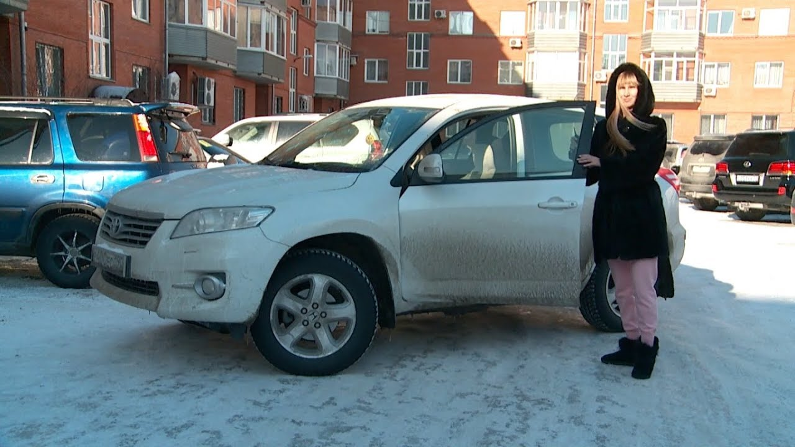
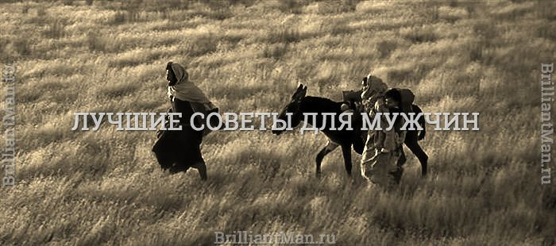

Советы уролога для мужчин, как сохранить потенцию

info@manzdrav.com Пн-Вс с 9-00 до 20-00 8(800)300-1678 Мой аккаунт Регистрация Авторизация Интернет-магазин Интернет-магазин В корзине пусто! В корзине пусто! Фужуньбао Супер, 8 капсул..«Фужуньбао Супер» - поистине магические капсулы для восстановления потенц.. 2 300 руб. Кордицепс 9900Кордицепс - это сильнейший природный стимулятор потенции. Он способен значительно прод.. 1 050 руб. Big Brother:Многие мужчины теряют смысл в жизни и все радости от бытия, сталкиваясь с такими проблем.. 1 000 руб. Комплекс «Репростанол» от простатита и бесплодияРепростанол - препарат с сильным эффектом, но очень .. 1 790 руб. Кастокрин-Бобровая струяПрименение бобрового мускуса известно со времен царской России. Бобровая стр.. 2 900 руб. Подберём Вам препарат, который обеспечит результат! Введите Ваш номер телефона, MAN ЗДРАВ
MAN здрав
MAN здрав Советы врачей-урологов для мужчин – как сохранить мужское здоровье
Все статьи Свежие публикации Мужские заболевания Потенция Простата Импотенция Увеличение члена Эрекция Эякуляция Половая жизнь Гормоны 14.06.2019 16:40 Советы врачей-урологов для мужчин – как сохранить мужское здоровье
Советы уролога помогут мужчинам сохранить свое здоровье и вовремя распознать угрозу для половой функции. При этом важно не пренебрегать регулярными обследованиями – посещать уролога необходимо как минимум раз в год в профилактических целях. Самолечение может навредить здоровью.
Какие советы дают специалисты, какие признаки и изменения в самочувствии станут тревожными маркерами – ответ в этой статье.
Какие симптомы требуют внимания Мужчине стоит обратить пристальное внимание на свое состояние, если появились: Проблемы с мочеиспусканием – к примеру, частые позывы, боли, рези или жжение; Боли в половых органах и нижней части живота – при патологиях органов могут появляться тянущие, колющие или режущие боли; Выделения из уретры – они часто становятся первыми признаками воспалительных процессов, локализующихся в мочеполовой системе; Проблемы с потенцией и эрекцией – мужчина может заметить отсутствие утренней эрекции, недостаточное наполнение члена кровью при сексуальном возбуждении, снижение уровня влечения. Нарушения мочеиспускания характерны для целого ряда заболеваний – к таким нарушениям часто приводит простатит, цистит или острый уретрит. В большинстве случаев данные воспалительные болезни эффективно устраняются корректно подобранной антибактериальной терапией. Важно своевременно получить медицинскую помощь, так как невылеченные, запущенные болезни приобретают хроническую форму.
Боль в паховой области или нижнем отделе живота можно за минуты устранить с помощью обезболивающих средств, однако это не решает основную проблему – причину, вызвавшую боль. Не стоит бесконтрольно принимать препараты от боли, так как это смазывает клиническую картину и затрудняет диагностику. С жалобами на болевые ощущения в области половых органов необходимо обратиться урологу и терапевту. После обследования будет установлен точный диагноз, а затем последует лечение.
Выделения из уретры могут включать в себя примеси крови и гноя, иметь неприятный запах. Сероватые, грязно-желтые, зеленоватые или красно-розовые выделения не являются нормой. Мужчина должен помнить, что устранить эту проблему самостоятельно нельзя, и она не пройдет сама, если повременить с обращением к врачу несколько дней. Зачастую выделения из уретры вызваны инфекциями, передающимися половым путем. Лечение включает в себя прием антибиотиков и антибактериальных средств, однако перед назначением препаратов нужно выявить микроорганизмы, вызвавшие заболевание. Если мужчина не обратится к специалисту за диагностикой и лечением, может развиться сепсис половых органов.
С любыми жалобами на сексуальную функцию мужчинам необходимо обследоваться у уролога, который либо выявит причину и найдет правильный способ лечения, либо направит пациента к специалисту другого профиля (эндокринологу, неврологу, психологу). У мужчин, перешагнувших порог в 50 лет, сексуальная сила может уменьшаться вследствие естественного снижения уровня тестостерона – в этом случае широкое применение находят натуральные препараты для мужчин, способствующие синтезу мужских половых гормонов. Натуральные средства для восстановления потенции безопасны для мужчин и легки в применении – в результате их использования эрекция становится стойкой, а потенция значительно улучшается. Свяжитесь с нашими консультантами, чтобы получить информацию о природных препаратах и помощь в выборе средства, отвечающего вашим потребностям. Как правило, к проблемам в половой сфере приводят заболевания – чтобы не допустить их развития, нужно регулярно проверять здоровье у уролога. Профилактические осмотры способны предупредить патологии половых органов и сохранить хорошую потенцию и сильную эрекцию.
Факторы, которые негативно отражаются на здоровье мужчин Отклонения в работе мочеполовой системы часто являются многофакторными, но основных причин всего несколько.
Нарушения здоровья и травмы К этой категории относят: Нарушения гормонального баланса. Гормоны могут изменять свое качество и количество под влиянием множества факторов, и такие колебания нередко мешают нормальной работе половых функций. Как правило, резкие гормональные изменения требуют диагностики и лечения под контролем уролога, андролога или эндокринолога. Для подростков же гормональные колебания нормальны и в большинстве случаев не несут опасности для здоровья. Заражение патогенными организмами, вызвавшими воспаление тканей. Такое заражение может вызывать простатит, уретрит, цистит, воспаления других органов. При наличии воспалительных процессов, как острых, так и хронических, лучше как можно скорее приступить к лечению. Самолечение крайне опасно и может привести к развитию сопротивляемости у микробов-возбудителей. Сопутствующие заболевания. Сахарный диабет, болезни ЖКТ и сердечно-сосудистой системы негативно влияют на эректильную функцию и общее состояние мочеполовой системы. К примеру, при диабете у мужчины нередко развивается варикоцеле. В случае наличия сопутствующих заболеваний нужен врачебный контроль, коррекция негативных состояний и профилактика возможных недугов. Травмы. Медикаментозное и хирургическое лечение, используемое при различных травмах органов, костей и мышц часто приводит к ухудшению сексуальных функций и другим малоприятным побочным эффектам. Вышеперечисленные состояния требуют обязательного участия врача-специалиста для оказания квалифицированной помощи. Без лечения и профилактики заболеваний состояние мочеполовой системы не улучшится.
Нездоровые привычки и отсутствие здоровых привычек Причинами данного типа становятся: Низкая физическая активность, негативно отражающаяся на общем состоянии организма. Следствием малой подвижности становится нарушение кровообращения в малом тазу, что ведет к эректильной дисфункции и другим недугам. Неправильный рацион. Злоупотребление закусками, жирной и жареной пищей провоцирует накопление излишней жировой ткани, что нарушает работу внутренних органов. Кроме того, жировая ткань производит гормон эстроген, что приводит к нарушению гормонального баланса и снижает потенцию. При частых случаях злоупотребления пищей или нарушениях пищевого поведения требуется обратиться к диетологу. Несоблюдение правил личной гигиены. При пренебрежении регулярными гигиеническими процедурами на коже и слизистых оболочках человека начинает скапливаться множество микроорганизмов, часть из которых — болезнетворные. Чтобы сохранить здоровье, необходимо поддерживать тело, одежду, личные предметы и дом в чистоте. Здоровый образ жизни – немаловажный фактор, помогающий мужчинам прекрасно себя чувствовать в любом возрасте.
Меры профилактики болезней мочеполовой системы Среди самых эффективных мер профилактики: Активный образ жизни, занятия спортом; Соблюдение правил личной гигиены; Правильное питание; Использование природных средств. Спортивная нагрузка помогает держать тело в тонусе, поддерживать хорошее состояние мышц и суставов, а также снижает риск ожирения и множества других болезней. Рекомендуется воспользоваться услугами персонального тренера, который подберет оптимальное соотношение кардио и силовых нагрузок. В случае если заниматься с тренером нет возможности или желания, мужчина может делать утреннюю зарядку, регулярно ходить на прогулки и больше времени проводить на свежем воздухе или в бассейне.
Личная гигиена крайне важна для здоровья. Необходимо регулярно принимать душ, своевременно менять постельные принадлежности и стирать одежду, а также поддерживать порядок в доме, хорошо очищая все поверхности. Если нет возможности принять душ, следует промывать наружные половые органы под проточной водой минимум два раза в день. Также в рамках соблюдения личной гигиены при половом акте требуется пользоваться барьерным контрацептивом – презервативом. Презерватив эффективно защищает от инфекций, передающихся половым путем – основного возбудителя бактериальных поражений мочеполовой системы.
Правильное питание нужно для нормализации обменных процессов в организме, и, следовательно, улучшения состояния здоровья. Следует потреблять больше круп, овощей и фруктов, а также не отказываться от нежирного мяса. Бобовые, рыба и морепродукты также важны. Придерживаясь здорового питания, стоит ограничить употребление снеков, кондитерских изделий, обработанного мяса, газированной воды и алкоголя. Мужчинам, привыкшим к нездоровой пище, вгонять себя в строгие рамки не стоит, так как будет велик риск «сорваться». Смысл правильного питания в том, чтобы получать необходимое количество КБЖУ, минералов и витаминов, поддерживая оптимальную работу организма.
Натуральные природные средства для мужчин улучшают потенцию и эрекцию, усиливают кровообращение в области тазовых органов и предупреждают застойные болезни – к примеру, простатит. В основе этих препаратов – экстракты, корни и природные тоники, благотворно действующие на мужское здоровье. Предлагаемые средства многокомпонентные – при этом все элементы состава сбалансированы, что позволяет получить быстрый эффект от применения. Свяжитесь с нами, нажав кнопку обратного звонка для того, чтобы получить консультацию по натуральным препаратам для мужчин и помощь в выборе подходящего средства. Рекомендуемые препараты по теме:
Фужуньбао Супер
Кордицепс 9900
Big Brother
Комплекс «Репростанол» от простатита и бесплодия
Кастокрин-Бобровая струя
Познакомьтесь с ассортиментом
Каталог продукции Закажите
и получите бесплатную консультацию по выбору препарата.
обратный
звонок Получить консультацию
и наш специалист свяжется с
Вами в самое ближайшее время .
Ожидайте обратного звонка в течении 15 минут.
В том случае, если Вы оставили заявку в нерабочее время - не переживайте, мы свяжемся с Вами с утра. Информация
Главная О компании Контакты Категории
Мужские препараты Продление полового акта Увеличение полового члена Женские возбудители Восстановление девственности Феромоны Смазки и Лубриканты Контакты
8(800)300-1678 Одноклассники info@manzdrav.com Пн-Вс с 9-00 до 20-00 Производители
«Rungra Health Food Stuff Factory D.P.R. of Korea», Корея NBC Co., Ltd, Япония «Tai Ping (H.K.) Traiding Co, Ltd», Китай Milan Arzneimittel, Германия "Polens(M) SDN BHD", Малайзия Pfizer H.C.P. Corporation, США ЗАО «Лаборатория ЭМАНСИ», Россия Корпорация «Тяньши» (кит. 天狮 — «Небесный лев») «Tiens Group Co. Ltd», Китай Сертификаты Все права защищены 2019(с)
